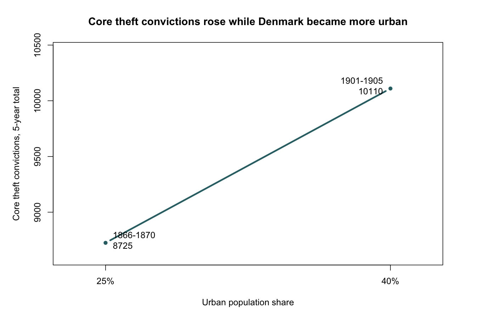
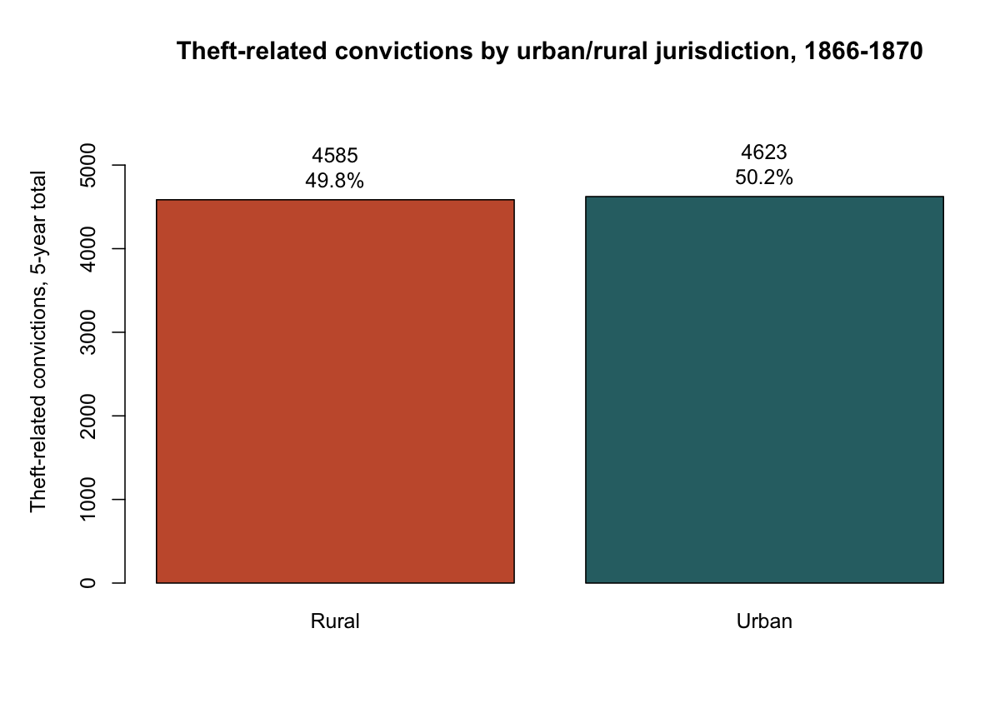
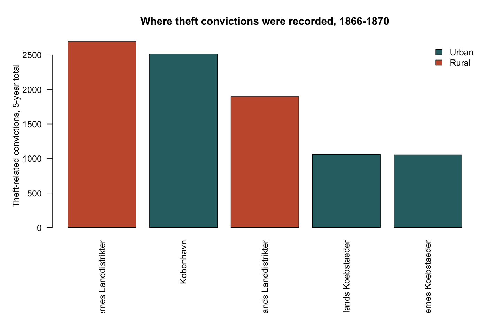

Hypothesis: theft increased as Denmark became more urbanised.
The analysis uses two Danmarks Statistik publications: Kriminalstatistik 1866-1870 and Retsplejen 1901-1905. I searched for theft categories containing Tyveri, cleaned spelling/OCR variants, and merged comparable theft categories.



Core theft convictions increased from 8725 in 1866-1870 to about 10110 in 1901-1905. Over roughly the same historical shift, the urban share of Denmark's population rose from 25% in 1870 to 40% in 1906. This supports the hypothesis in a cautious way: recorded theft rose while Denmark became more urban, but the data do not prove urbanisation caused the rise.
The 1901-1905 source gives some theft counts as stated annual averages and changes the legal categories. The 1866-1870 source gives better urban/rural detail for theft itself. Therefore, the comparison is harmonised, not perfectly identical. The data measure convictions and legal reporting practices, not all thefts actually committed.